机械原理考研填空题精练
一、绪论
-
机械是 机器 和 机构 的总称。
-
组成机构，并且相互间能做 相对运动 的物体，叫做构件。
-
构件与零件的含义是不同的。构件是 运动单元 ，零件是 制造单元 。
二、平面机构的结构分析
平面机构的组成
-
平面运动副的最大约束数为 2 ，最小约束数为 1 ；引入一个约束的运动副为 高副 ，引入两个约束的运动副有 转动副和移动副 。
-
两构件通过面接触而构成的运动副为 低副 ，它引入 2 个约束；通过点、线接触而构成的运动副称为 高副 ，它引入 1 个约束。
-
机构中的相对静止件称为 机架 ，机构中按给定运动规律运动的构件称为 原动件 。
-
机构倒置是指 变换机构中的机架 ，倒置以后 相对 运动不变，其原因是 相对尺寸未变 。
-
运动链是指 两个或两个以上的构件通过运动副的连接而构成的可相对运动的系统 。
-
运动副是指能使两构件之间既保持 直接 接触，而又能产生一定形式相对运动的 可动连接 。
-
按构件的接触情况，运动副分为高副与低副。高副是指 点、线接触 ，低副是指 面接触 。
-
属于平面高副的有 齿轮副、凸轮副 ，属于平面低副的有 移动副、转动副 。
-
回转副的两构件之间，在接触处只允许 绕 孔的轴心线作相对转动。
-
移动副的两构件之间，在接触处只允许按 给定 方向作相对移动。
-
低副的缺点：由于是 滑动 摩擦，摩擦损失比高副 大 ，效率 低 。
-
火车车轮在铁轨上的滚动，属于 高 副。
-
在平面机构中，两构件之间以线接触所组成的运动副称为 高副 ，它产生 1 个约束，而保留了 2 个自由度。
-
由两个以上构件以运动副联接而成的系统称为 运动链 。
-
在原动件的带动下，做 确定 运动的构件，叫从动件。
-
平面运动副的最大约束数为 2 个，最小约束数为 1 个。
平面机构自由度的计算
-
计算机构自由度时，应注意的三种情况是 复合铰链 、 局部自由度 、 虚约束 。
-
在平面机构中，若引入 \(P_h\) 个高副将引入 \(P_h\) 个约束，引入 \(P_l\) 个低副将引入 \(2P_l\) 个约束。若机构活动构件数为 \(n\) ，则机构自由度 \(F=\) \(3n - 2P_l - P_h\) 。
-
虚约束是指 机构中不起独立限制作用的约束 。
-
在平面中，不受约束的构件自由度等于 3 ，两构件组成移动副后的相对自由度等于 1 。
-
由 \(M\) 个构件铰接于一点形成的复合铰链应包含 \(M-1\) 个转动副。
机构具有确定运动的条件
-
机构要能够运动，自由度必须 \(\ge 1\) ，机构具有确定相对运动的条件是 机构自由度数与原动件数目相等 。
-
若机构自由度 \(F>0\)，而原动件数 \(<F\)，则构件间的运动是 不确定 ；若机构自由度 \(F>0\)，而原动件数 \(>F\)，则各构件之间 运动关系发生矛盾，将引起损坏 。
平面机构的组成原理、结构分类与分析
-
根据机构的组成原理，任何机构都可以看成是由 机架 、 原动件 和 基本杆组 组成。
-
平面机构结构分析中，将不能再拆分的最简单的自由度为零的构件组称为 基本杆组 。
三、平面机构的运动分析
机构运动分析的内容、目的和方法
- 机构运动分析的方法主要有 瞬心法 和 矢量方程图解法 。
机构速度分析的速度瞬心法
-
两构件组成转动副时，其瞬心在 转动副中心 处；组成移动副时，其瞬心在 垂直于移动副导路的无穷远处 处；组成纯滚动的高副时，其瞬心在 高副接触点 处。
-
速度瞬心可以定义为做平面运动的两构件上， 相互重合的瞬时相对速度为零 的点。
-
相对瞬心与绝对瞬心相同点是 都是两构件上相对速度为零、绝对速度相等的点 ，而不同点是 相对瞬心的绝对速度不为零，而绝对瞬心的绝对速度为零 。
-
在由 \(N\) 个构件组成的机构中，有 \(\frac{N(N-1)}{2}\) 个相对瞬心，有 \(N-1\) 个绝对瞬心。
-
当两构件不直接构成运动副时，瞬心位置用 三心定理 确定。
-
速度瞬心可以定义为互相做平面相对运动的两构件上， 瞬时相对速度为 0 的 重合 点。
-
作相对运动的三个构件的三个瞬心必 位于同一直线上 。
-
平面四杆机构共有 6 个速度瞬心，其中 3 个是绝对瞬心。
-
当两构件组成回转副时，其瞬心是 回转副中心 。
-
当两构件不直接组成运动副时，瞬心位置用 三心定理 确定。
-
当两构件组成转动副时，其相对速度瞬心在 转动副中心处 ；组成移动副时，其瞬心在 移动副导路的垂线上无穷远处 ；组成兼有滑动和滚动的高副时，其瞬心在 接触点处公法线上 。
机构运动分析的矢量方程图解法
-
速度比例尺的定义是 图上单位长度(mm)所代表的实际速度值(m/s) ，在比例尺单位相同的条件下，绘制出的速度多边形图形 越大 ，它的绝对值 越小 。
-
速度影像的相似原理只能应用于 同一构件上 的各点，而不能应用于机构中 不同构件上 的各点。
-
加速度多边形中，连接极点至任一点的矢量，代表构件上相应点的 绝对 加速度；而连接其它任意两点间的矢量，则代表构件上相应两点间的 相对 加速度。
-
当两构件构成 移动副 时，且 牵连运动为转动 时，必然存在科氏加速度分量。
-
一个运动矢量方程只能求解 2 个未知量。
-
在机构运动分析图解法中，影像原理只适用于求 同一构件上不同点的速度、加速度 。
-
当两构件的相对运动为 移 动，牵连运动为 转 动时，两构件的重合点之间将有哥氏加速度。哥氏加速度的大小为 \(a^k = 2\omega \cdot v_r\) ；方向与 将相对速度沿牵连角速度方向旋转 90° 的方向一致。
四、平面连杆机构及其设计
平面连杆机构及其传动特点
-
平面连杆机构能实现一些复杂的 平面 运动。
-
平面连杆机构是由一些刚性构件用 转动 副和 移动 副相互连接而组成的机构。
-
机构中的运动副是指 两构件间直接接触形成的可动连接 ，平面连杆机构是由许多刚性构件用 平面低副 联接而成的机构。
平面四杆机构的类型和应用
-
当平面四杆机构中的运动副都是 回转 副时，就称之为铰链四杆机构；它是其他多杆机构的 基础 。
-
在铰链四杆机构中，能绕机架上的铰链做 往复摆动 的 连架杆 叫摇杆。
-
铰链四杆机构曲柄存在的条件是： 最短杆与最长杆的长度之和小于等于其他两杆之和 ， 最短杆为连架杆或机架 。
-
铰链四杆机构满足杆长条件，最短杆为连架杆时，该机构为 曲柄摇杆机构 ；最短杆为机架时，该机构为 双曲柄机构 ；最短杆的对杆为机架时，该机构为 双摇杆机构 。
-
铰链四杆机构在任何情况下均为双摇杆机构的条件是 最长杆与最短杆的长度之和大于其他两杆长度之和 。
-
实际中的各种形式的四杆机构，都可看成是由改变某些构件的 形状、相对长度 或选择不同构件作为 机架 等方法所得到的铰链四杆机构的演化形式。
-
曲柄滑块机构是改变 曲柄摇杆 机构中的 摇杆的长度 而形成的。
-
若以曲柄滑块机构的曲柄为主动件时，可以把曲柄的 旋转 运动转换成滑块的 直线往复 运动。
-
一对心曲柄滑块机构中，若改为以曲柄为机架，则将演化为 回转导杆 机构。
-
曲柄滑块机构是由曲柄摇杆机构的 摇杆 长度趋向 无穷大 而演变来的。
-
缝纫机踏板机构属于以 摇杆 为原动件的曲柄机构。
-
将曲柄滑块机构的 曲柄 改作固定机架时，可以得到导杆机构。
-
铰链四杆机构中， \(a=70mm,\) \(b=150mm,\) \(c=110mm\), \(d=90mm.\) 若以 \(a\) 杆为机架可得 双曲柄 机构；若以 \(b\) 杆为机架可得 双摇杆 机构。

-
在曲柄摇杆机构中改变 摇杆的长度为\(\infty\) 而形成曲柄滑块机构，在曲柄滑块机构中改变 回转副半径 而形成偏心轮机构。
-
试写出两种能将原动件单向连续转动转换成输出构件连续直线往复运动，且具有急回特性的连杆机构： 偏置曲柄滑块机构 、 牛头刨床机构 。
-
图示铰链四杆机构为双曲柄机构时，构件 \(AB\) 的尺寸 \(L_{AB}\) 的取值范围为 \(45 \le L_{AB} \le 55\) 。
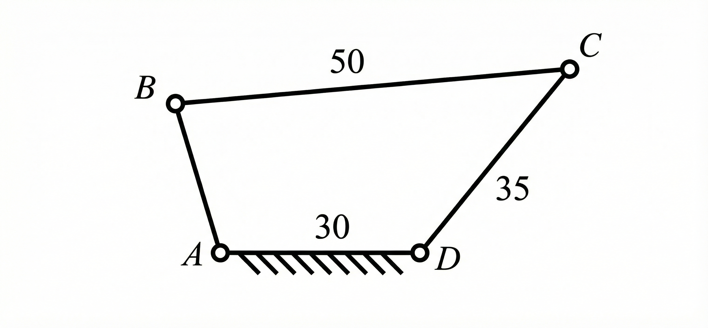
-
铰链四杆机构演化成其它形式的四杆机构有 4 种方法，它们分别是 改变构件的形状和运动尺寸 、 改变运动副尺寸 、 选取不同的构件作为机架 、 运动副包容关系的逆换 。
-
铰链四杆机构中， \(a=60mm, b=150mm, c=120mm, d=90mm\) (如图所示)，
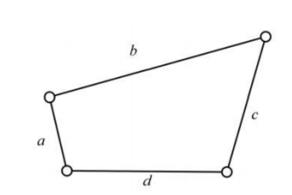
1) 以 \(a\) 杆为机架得 双曲柄 机构；
2) 以 \(b\) 杆为机架得 双摇杆 机构；
3) 以 \(c\) 杆为机架得 曲柄摇杆 机构；
4) 以 \(d\) 杆为机架得 曲柄摇杆 机构。
平面四杆机构的基本知识
-
曲柄滑块机构中，只有当以 滑块 为原动件时，该机构存在死点位置，此时机构中压力角 \(\alpha=\) \(90^{\circ}\) 。
-
在摆动导杆机构中，机构的传动角 \(\gamma\) 等于 \(90^{\circ}\) ；若摆杆的摆角是 \(\psi\) ，极位夹角 \(\theta\) 等于 \(\psi\) 。
-
对心曲柄滑块机构 无 (有，无)急回特性；若以滑块为机架，则将演化成 移动导杆 机构。
-
对于曲柄摇杆机构，若曲柄为主动件，其最小传动角 \(\gamma_{min}\) 出现在 曲柄与机架 共线的位置。
-
在实际生产中，常常利用急回运动这个特性，来缩短 非生产 时间，从而提高 工作效率 。
-
在曲柄滑块机构中，极位夹角 \(\theta\) 等于 \(36^{\circ}\)，则行程速比系数 \(K\) 等于 \(1.5\) 。行程速比系数越大，机构的急回特性 显著 。
-
偏心曲柄滑块机构，当曲柄为主动件时，该机构 存在 急回特性。
-
在曲柄摇杆机构中，极位夹角是指 摇杆处于两个极限位置时，原动件曲柄所处的两个位置间所夹的角度 。
-
对心曲柄滑块机构的曲柄长度为 \(a\)，连杆长度为 \(b\)，则最小传动角 \(\gamma_{min}=\) \(\arccos(a/b)\) 。
-
当机构的传动角 \(\gamma\) 等于 \(0^{\circ}\) (压力角 \(\alpha\) 等于 \(90^{\circ}\))时，机构所处的位置称为 死点 位置。
-
通常利用机构中构件运动时 自身 的惯性，或依靠增设在曲柄上 飞轮 的惯性来渡过死点位置。
-
飞轮的作用是可以 储存能量 ，使运转 平稳 。
-
连杆机构的死点位置，将使机构在传动中出现 卡死 或发生运动方向 不确定 等现象。
-
曲柄摇杆机构产生死点位置的条件是：摇杆为 主动 件，曲柄为 从动 件，曲柄与 连杆 共线。
-
可以利用连杆机构处于死点位置的特性，来 锁紧 工件。
-
平面四杆机构有无急回特性取决于 极位夹角 的大小。
-
图示为摆动导杆机构，已知曲柄 \(L_{AB}=20mm\) 机架 \(L_{AC}=40mm\)，试问该机构的极位夹角 \(\theta=\) \(60^{\circ}\) ，此机构的行程速比系数 \(K=\) \(2\) (写出计算公式和结果)。
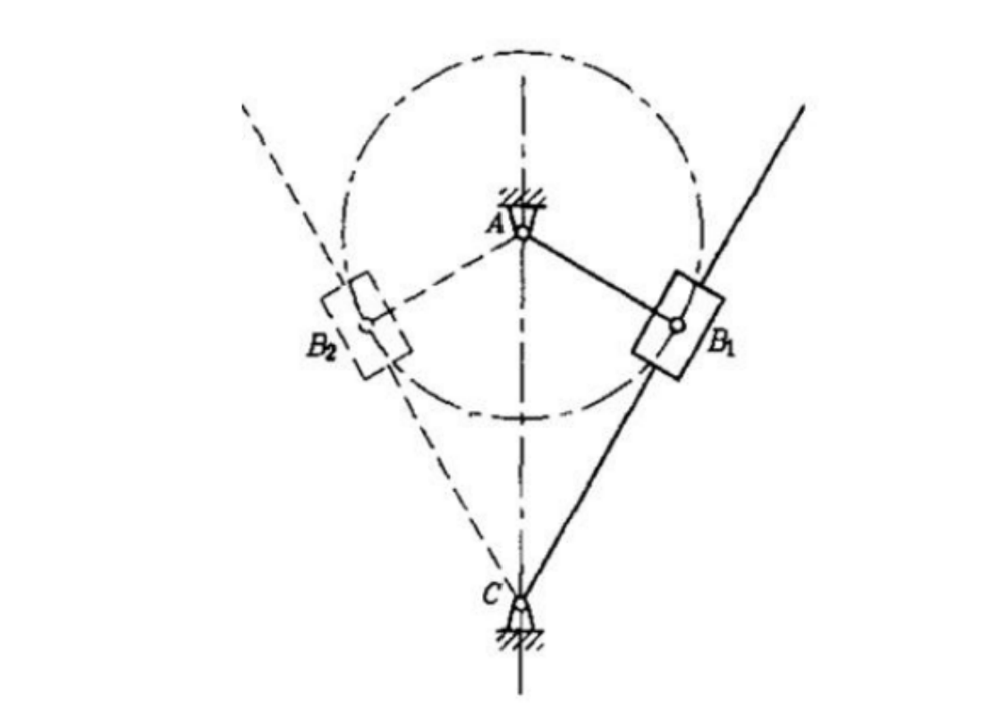
-
平行四边形机构的极位夹角 \(\theta=\) \(0\) ，它的行程速比系数 \(K=\) \(1\) 。
-
在对心曲柄滑块机构中，当其曲柄处在与滑块的移动方向垂直时，其传动角为 最小值 ；导杆机构，其中滑块对导杆的作用力方向始终垂直于导杆，其传动角 \(\gamma\) 为 \(90^{\circ}\) 。
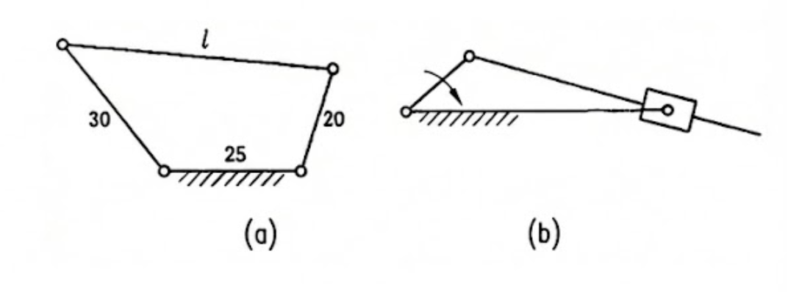
-
连杆机构如图所示，试回答：
1) 一个铰链四杆机构如图(a)所示，连杆的长度不论如何变化，不可能得到双曲柄机构 对 (对，还是错?)。因为 机架非最短杆 。
2) 一个曲柄摇块机构如图(b)所示，滑块逆时针转动时为工作行程，则曲柄 顺 (顺，还是逆?)时针方向回转时，摇块的工作行程平均角速度较大。
-
机构处于死点位置时，其压力角为 \(90^{\circ}\) ，传动角为 \(0^{\circ}\) 。
-
在曲柄摇杆机构中，当 曲柄 与 机架 两次共线位置之一时，出现最小传动角。
五、凸轮机构及其设计
凸轮机构的应用和分类
-
维持凸轮与从动杆高副接触封闭的方法有 力封闭 和 几何封闭 。
-
凸轮机构的最大优点是：只要适当地设计出凸轮的 轮廓曲线 ，就可以使 推杆 得到各种预期的运动规律，而且响应快速，机构简单紧凑。
-
在拟定传动方案时，若需要将主动件的连续转动变为从动件的往复移动，试任选两种机构： 直动从动件凸轮 机构、 齿轮齿条 机构。
推杆常用的运动规律及特性
-
在凸轮机构的几种基本的从动件运动规律中， 等速运动规律 使凸轮机构产生刚性冲击、 等加速等减速运动规律 产生柔性冲击、 正弦加速度运动规律 则没有冲击。
-
在凸轮机构的各种常用的推杆运动规律中， 等速运动规律 只宜用于低速的情况， 等加速等减速运动规律 宜用于中速，但不宜用于高速的情况；而 正弦加速度运动规律 可在高速下应用。
-
凸轮轮廓的形状是由 从动件运动规律 决定的。
-
若从动件的运动规律选择为等加速等减速的运动规律，简谐运动规律或正弦加速度运动规律，当把凸轮转速提高一倍时，从动件的加速度是原来的 4 倍。
-
在凸轮机构几种常用的推杆运动规律中， 正弦加速度运动规律 和 五次多项式运动规律 可在高速下应用。
-
在凸轮机构推杆的四种常用运动规律中， 等速 运动规律有刚性冲击； 等加速等减速 和 余弦加速度 运动规律有柔性冲击； 正弦加速度 运动规律无冲击。
-
凸轮机构中，推杆采用等加速等减速运动规律，是说明推杆在 前半程 按等加速运动，而 后半程 在按等减速运动。
-
在设计某高速凸轮机构时，工作要求推杆作等速运动，但又希望不存在刚性冲击和柔性冲击，则推杆运动规律应采用 修正后的等速 运动规律。
凸轮机构基本尺寸的确定
-
设计滚子推杆盘形凸轮机构的凸轮廓线时，若发现凸轮廓线有变尖现象，则在尺寸参数的改变上应采取的措施是 增大基圆半径 或 减小滚子半径 。
-
凸轮的基圆半径是从 转动中心 到 理论廓线 的最短距离。
-
滚子移动从动件盘状凸轮，它的实际廓线是理论廓线的 等距曲线 曲线。
-
凸轮的基圆半径越小，则凸轮机构的压力角越 大 ，而凸轮机构的尺寸越 小 。
-
设计凸轮机构，若量得其中某点的压力角超过许用值，可以用 增大基圆半径、采用正偏置 方法使最大压力角减小。
-
移动从动件盘形凸轮机构，当从动件运动规律一定时，欲同时降低升程和回程的压力角，可采用的措施是 增大基圆半径 ；若只降低升程的压力角，可采用 采用正偏置 方法。
-
写出两种既无刚性冲击、又无柔性冲击的运动规律 正弦加速度运动规律 、 五次多项式运动规律 。
-
平底垂直于导路的直动推杆盘形凸轮机构中，其压力角等于 0 。
-
在设计直动滚子推杆盘形凸轮机构的工作廓线时，发现压力角超过了许用值，且廓线出现变尖现象，此时应采用的措施是 增大基圆半径 。
-
设计凸轮机构时，若量得其中某点的压力角超过许用值，可用 增大基圆半径 、 采用正偏置 使压力角减小。
-
凸轮机构的压力角 \(\alpha\) 值的是凸轮与从动件接触点处 力 的方向和从动件在该点 速度 的方向之间的夹角，当压力角过大使机构会出现 自锁 。
-
凸轮机构中压力角越 小 ，动力性能越好；当从动件运动规律给定时，若减小基圆半径，则压力角 增大 。
-
为于提高机械效率，在推程阶段，当推杆作移动时，规定凸轮机构的许用压力角 \([\alpha]\) 为 \(30^{\circ}\) ，若为偏置直动从动件盘形凸轮机构，凸轮作逆时针转动，偏置距 \(e\) 应取在凸轮中心点的 右 侧。
-
当凸轮机构的压力角的最大值超过许用值时，就必然出现自锁现象。这种说法 错误 (正确或错误)。
-
其他条件不变，随着直动从动件盘形凸轮机构的基圆半径减小，压力角越来越 大 ，最终会导致机构 自锁 。
-
垂直于导路的平底直动从动件凸轮机构，其压力角 \(\alpha=\) \(0^{\circ}\) 。
-
凸轮的基圆半径越小，机构的结构就越 紧凑 ，但过小的基圆半径会导致压力角 增大 ，从而使凸轮机构的传动性能变 差 。
-
在偏置直动尖顶推杆盘形凸轮机构中，机构的压力角与下列参数有关，即 推杆的运动规律 、 \(r_0\) 与 \(e\) 。
-
偏置滚子(尖顶)直动从动件盘状凸轮机构的压力角表达式 \(\tan\alpha=\) \(\frac{ds/d\delta \mp e}{\sqrt{r_0^2 - e^2} + s}\) 。
-
在直动滚子从动件盘形凸轮机构中，凸轮的理论廓线与实际廓线间的关系是 法向距离为滚子半径的等距曲线 。
-
一偏置直动平底从动件盘形凸轮机构，平底与从动件运动方向垂直，凸轮为主动件，该机构的传动角 \(\gamma=\) \(90^{\circ}\) 。
-
确定凸轮基圆半径的原则是 在保证 \(\alpha_{max} \le [\alpha]\) 的条件下，应使基圆半径尽可能小 。
-
滚子从动件盘形凸轮机构，若滚子半径为 \(r_r\)，为使凸轮实际廓线不变尖，则理论廓线的最小曲率半径 \(\rho_{min}\) 应满足 \(r_r < \rho_{min}\) 。
-
设计滚子从动件盘形凸轮轮廓线时，若发现工作廓线有变尖现象时，则在尺寸参数上应采取的措施是 (1) 加大基圆半径 (2) 减小滚子半径 。
六、齿轮机构及其设计
齿轮机构的类型、特点及其齿廓曲线选择
- 要使两圆柱齿轮作定传动比传动，则其齿廓必须满足的条件为 过两轮齿廓的任一接触点K所作的这对齿廓的公法线与两轮连心线的交点P为一定点 。
渐开线齿廓及其啮合特点
-
渐开线齿廓上任一点的压力角是指 该点法线方向与速度方向间夹角 ，渐开线齿廓上任一点的法线与 基圆 相切。
-
渐开线齿廓之所以能保证一定传动比传动，其传动比不仅与 基圆半径 半径成反比，也与其 节圆 半径成反比，还与 分度圆 半径成反比。
-
渐开线上任一点的法线与基圆 相切 ，渐开线上各点的曲率半径是 不同 的。
-
渐开线齿轮的齿廓形状与哪些参数有关？ 基圆半径 。
渐开线标准齿轮的基本参数和几何尺寸
-
齿轮分度圆是指 具有标准模数、压力角 的圆，节圆是指 以转动中心为圆心，以各转动中心至节点距离为半径所作 的圆。
-
渐开线标准齿轮是指 模数、分度圆压力角、齿顶高系数、顶隙系数 均为标准值，且分度圆齿厚等于分度圆齿槽宽的渐开线齿轮。
-
渐开线标准直齿圆柱齿轮的法向齿距为 \(p_n\) ，基圆齿距为 \(p_b\)，分度圆齿距为 \(p\)。试说明三者之间的关系 \(p_n = p_b < p\) 。
渐开线直齿圆柱齿轮的啮合传动
-
一对渐开线齿廓啮合传动时，它们的接触点在 实际啮合 线上，它的理论啮合线长度为 两基圆的内公切线长度 \(N_1N_2\) 。
-
一对渐开线直齿圆柱齿轮的重合度与齿轮的 齿数 有关，而与齿轮的 模数 无关。当 \(\epsilon=1.3\) 时，说明在整个啮合过程中两对齿啮合的时间占整个啮合时间的 46.15 %，一对齿啮合的时间占整个啮合时间的 53.85 %。
-
一对渐开线直齿圆柱齿轮 (\(\alpha=20^{\circ}\), \(h_a^*=1\))啮合时，最多只有 2 对轮齿在同时啮合。当安装时的实际中心距大于标准中心距时，啮合角 \(\alpha'\) 是变大还是变小? 变大 ；重合度是增大还是减小? 变小 ；传动比 \(i\) 又是如何变化的 不变 。
-
为保证一对渐开线齿轮可靠地连续转动，实际啮合线长度与基节的关系为 \(\frac{\overline{B_1B_2}}{P_b} \ge 1\) 。
-
直齿圆柱齿轮传动的正确啮合条件是 两个齿轮的模数 m 相等，两个齿轮的分度圆压力角相等 。
-
齿轮传动的重合度为 实际啮合线段 \(B_1B_2\) 的长度 与 基圆齿距 \(p_b\) 的比值。
-
增大模数，齿轮传动的重合度 不变 ；增多齿数，齿轮传动的重合度 增大 。
-
齿条直线齿廓上的各点具有相同的 压力角 (或齿形角)。
-
在直齿条上， 齿厚 与 齿槽宽 相等的一条直线称为分度线，且均等于齿廓的倾斜角，此角称为 分度 线。
-
直齿轮与直齿条在标准安装时，齿轮的节圆与 分度 圆重合，齿条的节线与 分度 线重合。在非标准安装时，齿轮的节圆与 分度 圆重合，但齿条的节线不与 分度 线重合。
-
渐开线齿条齿廓上任一点的曲率半径等于 无穷大 。
渐开线齿廓的切削原理与根切现象
-
当采用 范成 法切制渐开线齿轮齿廓时，可能会产生根切。
-
生产上对齿轮传动的基本要求是 传动比恒定 。
-
用范成法加工齿轮时，发生根切的根本原因是 刀具的齿顶线超过了啮合线与轮坯基圆的切点(即极限啮合点) 。
-
齿条形刀具范成法切齿时，齿轮模数由刀具模数决定，采用模数为 \(2.5mm\) 的标准齿条刀具加工齿轮。已知：刀具移动速度 \(v=60mm/s\)，轮坯角速度 \(\omega=1 rad/s\)，则被加工齿轮的齿数 \(z=\) 48 ，若刀具中线与轮坯中心距离 \(L\) 为 \(59mm\)，则被加工齿轮为 负 变位，变位系数为 -0.4 。
渐开线变位齿轮传动特点
-
基本参数相同的正变位齿轮与标准齿轮比较，其分度圆齿厚 增大 ，齿槽宽 减小 ，齿顶高 增大 ，齿根高 减小 。
-
在设计直齿圆柱齿轮机构时，首先考虑的传动类型是 正传动 ，其次是 零传动 ，在不得已的情况下如 安装中心距小于标准中心距 ，只能选择 负传动 。
-
渐开线齿轮变位后，与标准齿轮相比，正变位齿轮的分度圆 不变 ，正变位齿轮的齿根圆直径 变(增)大 。
-
一对齿数不同的非标准渐开线齿轮传动，小齿轮通常采用 正变位 变位。
-
要想设计一对中心距较标准中心距小的齿轮传动，应选用 负 传动，这时啮合角 \(\alpha'\) 小于 分度圆压力角 \(\alpha\) 。
斜齿圆柱齿轮传动的基本参数及传动特点
-
一对渐开线斜齿圆柱齿轮的正确啮合条件是 \(m_{n1}=m_{n2}\), \(\alpha_{n1}=\alpha_{n2}\), \(\beta_1=-\beta_2\) 。
-
一对斜齿圆柱齿轮传动的重合度由 端面重合度 和 轴面重合度 两部分组成。
-
斜齿轮 \(h_{an}^*=1\), \(\alpha_n=20^{\circ}\), \(\beta=30^{\circ}\) 的斜齿圆柱齿轮时不根切的最少齿数是 11 。
-
一斜齿轮法面模数 \(m_n=3 mm\)，分度圆螺旋角 \(\beta=15^{\circ}\)，其端面模数 \(m_t=\) 3.1 。
-
一对斜齿圆柱齿轮传动的重合度由 端面重合度 和 轴面重合度 两部分组成；斜齿轮的当量齿轮是指 以其法面齿形为齿形的假想 的直齿轮。
-
在斜齿圆柱齿轮传动中，除了用变位方法来凑中心距外，还可用 改变螺旋角的方法 来凑中心距。
-
对斜齿与直齿圆柱齿轮传动进行比较，斜齿比直齿轮的重合度 大 ，标准齿轮不根切的最小齿数 更小 。
-
外啮合斜齿圆柱齿轮的正确啮合条件是 \(m_{n1}=m_{n2}\), \(\alpha_{n1}=\alpha_{n2}\), \(\beta_1=-\beta_2\) 。
-
在斜齿圆柱齿轮设计中，应取 法面 模数为标准值。
直齿圆锥齿轮传动的基本参数及传动特点
-
一个锥顶角 \(\delta=25^{\circ}\), \(z=16\) 的直齿圆锥齿轮，它的当量齿数 \(z_v=\) \(z/\cos\delta=17.65\) (写出公式和结果)。
-
圆锥齿轮传动的正确啮合条件是 两轮大端上的模数 m 和压力角分别相等，且均为标准值 。
-
一对圆锥齿轮啮合的重合度可近似的按 其当量齿轮的重合度来 计算。
-
直齿圆锥齿轮机构的背锥是与 大端的分度圆 相切的圆锥，把背锥展开补齐的齿轮称为 当量齿轮 ，其齿数称为 当量齿数 。它有以下用途： 选择铣刀号、判断是否根切、查取齿形系数、计算重合度 。
-
一对圆锥齿轮机构的两轴线 相交 ，因而两圆锥齿轮的啮合相当于其 节圆锥 锥的纯滚动。
-
设两个直齿圆锥齿轮的分度圆锥角分别为 \(\delta_1\) 和 \(\delta_2\)，用它们来表达圆锥齿轮机构的传动比，则 \(i_{12}=\frac{\omega_1}{\omega_2}=\) \(\frac{\sin\delta_2}{\sin\delta_1}\) 。当轴角 \(\Sigma=90^{\circ}\) 时，传动比 \(i_{12}=\) \(\cot\delta_1 = \tan\delta_2\) 。
蜗杆传动的基本参数及传动特点
- 如图所示为蜗轮蜗杆传动，试写出蜗轮 2 的螺旋方向为 右 旋；蜗轮 2 的转向应是 逆 时针方向。
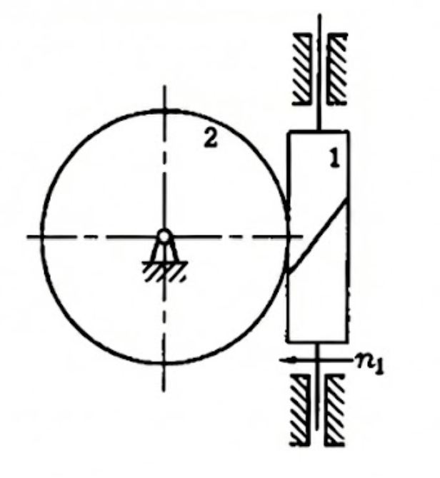
- 如图所示为一个简易的蜗杆蜗轮起重装置，当手柄如图所示转向转动时，要求重物 G 上升，那么此蜗杆的螺旋方向应为 右 旋，蜗轮的螺旋方向为 右 旋。
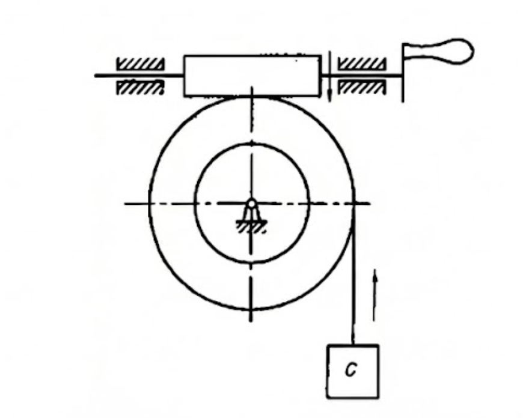
-
一对蜗杆蜗轮正确啮合条件是 蜗轮的端面模数等于蜗杆的轴面模数且为标准值；蜗轮的端面压力角应等于蜗杆的轴面压力角且为标准值；当蜗轮蜗杆的交错角 \(\Sigma=90^{\circ}\)，还需保证蜗杆的导程角等于蜗轮的螺旋角，而且蜗轮与蜗杆螺旋线旋向必须相同 。
-
蜗杆的标准模数和标准压力角在 轴 面，蜗轮的标准模数和标准压力角在 端 面。
-
蜗杆分度圆直径 \(d_1=\) \(mq\) ；蜗轮分度圆直径 \(d_2=\) \(mz_2\) 。
-
圆柱蜗杆传动中，当蜗杆主动时，其传动啮合效率为 \(\eta=\frac{\tan\gamma}{\tan(\gamma+\varphi_v)}\) ，蜗杆的头数 \(z_1\) 越多 越高 ，蜗杆传动的自锁条件为 \(\gamma \le \varphi_v\) ，蜗杆的头数越小，越容易 自锁 。
-
有一标准普通圆柱蜗杆传动，已知 \(z_1=2\), \(q=8\), \(z_2=42\)，中间平面上模数 \(m=8mm\)，压力角 \(\alpha=20^{\circ}\)，蜗杆为左旋，则蜗杆分度圆直径 \(d_1=\) 64 mm，传动中心距 \(a=\) 200 mm。蜗杆分度圆柱上的螺旋线升角 \(\gamma=\) \(14^{\circ}02'10''\) ，蜗轮为 左 旋，蜗轮分度圆柱上的螺旋角 \(\beta=\) \(14^{\circ}02'10''\) 。
-
减速蜗杆传动中，主要的失效形式为 轮齿点蚀、弯曲折断、磨损、齿面胶合 ，常发生在 蜗轮轮齿上 。
-
闭式蜗杆传动的功率损耗，一般包括： 啮合功率损耗、轴承摩擦功耗、搅油功耗 三部分。
-
蜗杆传动中，蜗杆所受的圆周力 \(F_{t1}\) 的方向总是与 其旋转方向相反 ，而径向力 \(F_{r1}\) 的方向总是 指向圆心 。
-
蜗杆传动中，蜗杆的螺旋线方向与蜗轮的螺旋线方向 相同 。
-
阿基米德蜗杆传动变位的主要目的是为了 凑传动比、凑中心距 。
-
蜗杆传动反行程自锁的条件是 导程角小于或等于当量摩擦角 。
-
限制蜗杆的直径系数 \(q\) 是为了 刚度 。
-
蜗杆导程角的旋向和蜗轮螺旋线的方向应 相同 。
-
蜗轮的螺旋角与蜗杆的螺旋升角 大小相等 和 旋向相同 。
七、轮系
齿轮系及其分类
-
根据轮系中齿轮的几何轴线是否固定，可将轮系分 定轴 轮系、 周转 轮系和 复合 轮系三种。
-
行星轮系由 行星轮 、 中心轮 和 系杆 三种基本构件组成。
-
行星轮系的自由度等于 1 ，差动轮系的自由度等于 2 。
-
旋转齿轮的几何轴线位置都 固定 的轮系，称为定轴轮系。在行星轮系中，具有运动几何轴线的齿轮，称为 行星轮 ，具有固定几何轴线的齿轮，称为 太阳轮 。
-
如果在齿轮传动中，其中有一个齿轮和它的 几何轴线 绕另一个 齿轮 旋转，则该轮系称为周转轮系。
-
自由度等于2的周转轮系，又称为 差动 轮系；汽车上的差速器为 差动 轮系。
-
差动轮系的主要结构特点是有两个 主动件 。
-
组成周转轮系的基本构件有： 中心轮 、 行星轮 和 系杆 机架。
定轴轮系、周转轮系和复合轮系传动比的计算
-
加惰轮的轮系只能改变 从动轮 的旋转方向，不能改变轮系的 传动比 。
-
平面定轴轮系传动比的大小等于 所有从动轮齿数的连乘积与所有主动轮齿数的连乘积之比 ，从动轮的回转方向可总结为： 内啮合相同，外啮合相反 。
-
轮系中惰轮的作用是 只改变从动轴回转的方向，而不改变传动比 。
轮系的功用
-
周转轮系可获得 较大 的传动比和 较小 的功率传递。
-
轮系可以实现 变速 要求和 变向 要求。
行星轮系的效率、类型选择及设计的基本知识
-
行星轮系各轮齿数与行星轮个数的选择必须满足的四个条件是 传动比条件 、 同心条件 、 装配条件 和 邻接条件 。
-
周转轮系结构尺寸 紧凑 ，重量较 轻 。
-
设计行星轮系时，需满足的同心条件是指 行星架的回转轴线应与中心轮的几何轴线相重合 。
-
图示轮系称为 行星轮系 。
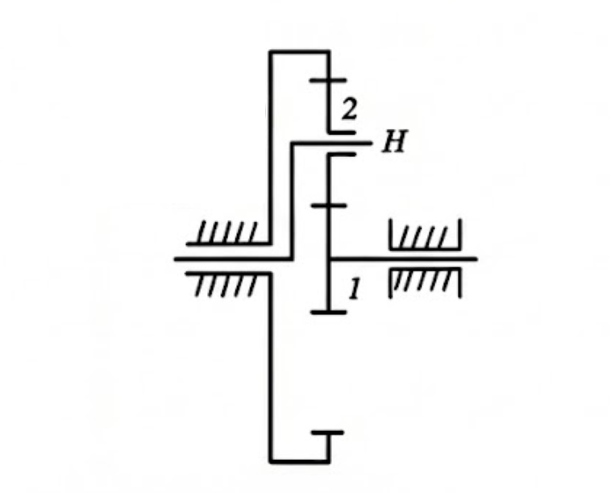
- 在周转轮系中，支持行星轮的构件称为 系杆(或行星架) ，几何轴线位置固定的齿轮称为 太阳轮(或中心轮) 。
八、力分析与机械的效率
运动副中摩擦力的确定
- 运动副中，平面接触的当量摩擦系数为 \(f\)，则如图槽面接触的当量摩擦系数为 \(f_v = \frac{f}{\sin(\alpha/2)}\) 。
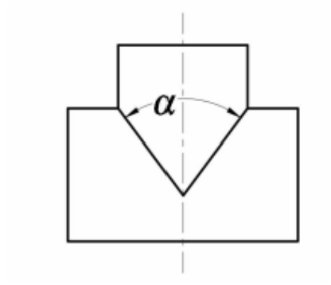
-
移动副中，总反力与法向反力之间所夹的锐角为 摩擦角 。
-
作匀速相对转动的转动副，转动副中的摩擦力总是 相切 摩擦圆。
-
槽面摩擦力比平面摩擦力大是因为 槽面的当量摩擦系数大于平面的摩擦系数 。
-
矩形螺纹和梯形螺纹用于 传动 ，而三角形(普通)螺纹用于 连接 。
-
梯形螺纹用于 双向传动 ，而锯齿形螺纹用于 单向传动 。
考虑摩擦时机构的受力分析
- 在构件 3、4 组成的移动副中，若移动副摩擦角为 \(\varphi\)，构件 4 对构件 3 的总反力 \(R_{43}\) 的方向是 与竖直方向呈 \(\varphi\) 角，向左上 。
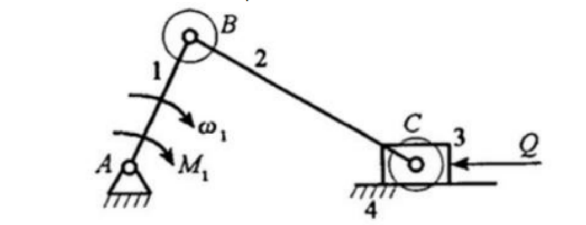
机械效率的计算方法
-
设机器中的实际驱动力为 \(P\)，在同样的工作阻力和不考虑摩擦时的理想驱动力为 \(P_0\)，则机器效率的计算式是 \(\eta=\) \(P_0 / P\) 。
-
机械效率等于 输出功 与 输入功 之比，它反映了 输入 功在机械中的有效利用程度。
-
提高机械效率的途径有 尽量简化机械传动系统，选择合适的运动副形式，尽量减少构件尺寸，减少摩擦 。
机械自锁的应用与分析
-
当计入运动副摩擦效应时，转动副中驱动力作用于 摩擦圆 内将发生自锁；移动副中驱动力为单一力且作用于 摩擦角 内将发生自锁。
-
设螺纹的升角为 \(\lambda\)，接触面的当量摩擦因数为 \(f_v\)，则螺旋副自锁的条件是 \(\lambda \le \arctan f_v\) 。
-
移动副自锁条件是 驱动力作用在摩擦角内 。
-
所谓自锁机构，即在 反行程 时不能运动，而在正行程时，它的效率一般小于 50% 。
-
根据机械效率，判别机械自锁的条件是 效率小于或等于 0 。
-
在轴和轴承构成的转动副中，设轴颈半径为 \(r\)，接触面的当量摩擦系数为 \(f_v\)，则摩擦圆半径为 \(\rho=f_v r\)，该转动副发生自锁的条件是 驱动力所在的直线与摩擦圆相交(相割) 。
-
蜗杆传动反行程自锁的条件是 导程角小于或等于当量摩擦角 。
-
机械发生自锁的实质是 驱动力所能做的功总是小于或等于克服由其可能引起的最大摩擦阻力所需要的功 。
九、机械的平衡
机械平衡的目的及内容
-
刚性转子静平衡的力学条件是 回转件中各个质量产生的离心力的合力等于零 ，而动平衡力学条件是 回转件中各个质量产生的离心力的合力和合力偶矩均等于零 。
-
回转体的不平衡可分为两种类型，一种是 静不平衡 ，其质量分布特点是 在同一回转面上 ；另一种是 动不平衡 ，其质量分布特点是 不在同一回转面上 。
-
研究机械平衡的目的是部分或完全消除构件在运动时所产生的 惯性力 和 动压力 ，减少或消除在机构各运动副中所引起的 附加动压力 ，减轻有害的机械振动，改善机械工作性能和延长使用寿命。
-
对于绕固定轴回转的构件，可以采用 静平衡 或 动平衡 的方法，使构件上所有质量的惯性力形成平衡力系，达到回转构件的平衡。若机构中存在作往复运动或平面复合运动的构件，应采用 完全平衡 或 部分平衡 方法，方能使作用在机架上总惯性力得到平衡。
-
下图中，S 为总质心，图 (1) 中转子需静平衡，图 (2) 和 (3) 中转子需动平衡。
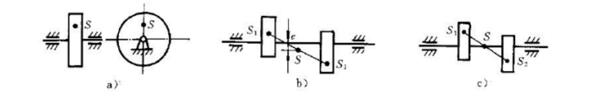
-
回转构件平衡的条件是： 回转件中各个质量产生的离心力的合力和合力偶矩均等于零 。
-
只使刚性转子的 惯性力 得到平衡称静平衡，此时只需在一个平衡平面中增减平衡质量；使 惯性力和惯性力偶矩 同时达到平衡称动平衡，此时至少要在 2 个选定的平衡平面中增减平衡质量，方能解决转子的不平衡问题。
-
静平衡适于长径比 \(b/D\) 小于 0.2 的刚性转子，动平衡适于长径比 \(b/D\) 大于或等于 0.2 的刚性转子。
-
对工作转速高于其一阶固有频率的偏心转子，应进行 挠性转子动平衡 平衡。
-
请举两个生产实际中需做动平衡的转子： 内燃机曲轴 、 电机转子 。
刚性转子的静平衡原理与计算
-
符合静平衡条件的回转构件，其质心位置在 回转轴线上 ，静不平衡的回转构件，由于重力矩的作用，必定在 轴心正下方 位置静止，由此可确定应加上或除去平衡质量的方向。
-
有一薄片圆盘重 \(Q=10N\)，质心与回转中心偏距 \(e=4mm\)，拟在半径 \(r=20mm\) 的圆周上加一平衡重予以平衡，则 \(Q=\) 2 N。
刚性转子的动平衡原理与计算
-
经过动平衡的转子一定能保证静平衡，这是因为 经过动平衡，实现了惯性力的平衡 。
-
用假想的集中质量的惯性力及惯性力矩来代替原机构的惯性力及惯性力矩，该方法称为 质量代换法 。
-
为使构件在质量代换前后，构件的惯性力和惯性力偶矩保持不变，应满足三个条件：代换前后构件的 质量 不变，代换前后构件的 质心位置 不变，代换前后构件对质心轴的 转动惯量 不变。
-
轴向尺寸较大的回转件，应进行 动 平衡，平衡时至少要选择 2 个校正平面。
-
在图示 a、b、c 三根曲轴中，已知 \(m_1r_1=m_2r_2=m_3r_3=m_4r_4\)，并且作轴向等间隔布置，且都在曲轴的同一含轴平面内，则其中 abc 轴已达静平衡， c 轴已达动平衡。
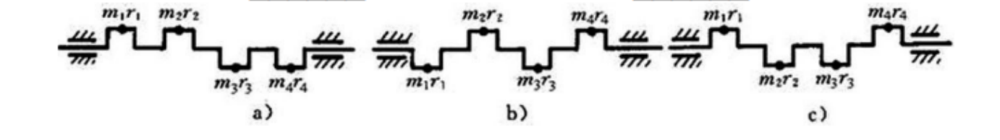
十、机械的运转及其速度波动的调节
速度波动的原因及危害
-
机器产生速度波动的原因是 输入功不等于输出功 ，速度波动的类型有 周期性速度波动 和 非周期性速度波动 两种。前者一般采用的调节方法是 安装飞轮 ，后者一般采用的调节方法是 安装调速器 。
-
机器在稳定运转状态下产生周期性速度波动的根本原因是 等效驱动力矩以及等效阻力矩作周期性变化，等效驱动力矩和等效阻力矩在一个周期内所做的功相等 。
-
周期性速度波动和非周期性速度波动的调节方法分别为 安装飞轮 和 安装调速器 。
-
大多数机器的原动件都存在运动速度的波动，其原因是驱动力所做的功与阻力所做的功 不能每瞬时 保持相等。
机械系统等效动力学模型的建立
-
具有 等效转动惯量 \(J(p)\) 或等效质量 \(m(p)\) 的等效构件的动能等于原机构的动能，而作用于其上 等效力矩 \(M_e\) 或等效力 \(F_e\) 的瞬时功率等于作用在原机构上的所有各外力在同一瞬时的功率。
-
计算等效力(或力矩)的条件是 功率相等 ；计算等效转动惯量(或质量)的条件是 动能相等 。
-
在建立机械系统的等效动力学模型时，其等效的条件是 瞬时功率相等 和 动能相等 ，等效力和等效质量与机构的真实运动速度的大小 无关 。
-
机器等效动力学模型中的等效质量(转动惯量)是根据系统总动能 相等 的原则进行转化的，因而它的数值除了与各构件本身的质量(转动惯量)有关外，还与构件的 运动规律 有关。
-
若机构中的所有构件作 等速 运动，则等效构件上的等效转动惯量或等效质量与机构位置无关；在计算等效转动惯量或等效质量时 无需 知道机器的真实运动。
稳定运转状态下机械的速度波动及其调节方法
-
周期性速度波动和非周期性速度波动的调节方法分别为 安装飞轮 和 安装调速器 。
-
最大盈亏功指机械系统在一个运动循环中 能量 变化的最大差值。
-
有一转子在一个周期内的最大角速度 \(\omega_{max}=105rad/s\)，最小角速度 \(\omega_{min}=95rad/s\)，其速度波动系数 \(\delta=\) 0.1 。
-
用飞轮进行调速时，若其它条件不变，则要求的速度不均匀系数越小，飞轮的转动惯量将越 大 ，在满足同样的速度不均匀系数条件下，为了减小飞轮的转动惯量，应将飞轮安装在 高速 轴上。
-
某机器的主轴平均角速度 \(\omega_m=100rad/s\)，机器运转的速度不均匀系数 \(\delta=0.05\)，则该机器的最大角速度 \(\omega_{max}\) 等于 102.5 rad/s，最小角速度 \(\omega_{min}\) 等于 97.5 rad/s。
-
某机械主轴实际转速在其平均转速的 \(\pm 3\%\) 范围内变化，则其速度波动系数 \(\delta=\) 0.06 。
-
机器中为了减小飞轮的重量，飞轮宜安装在 高 速轴上，过分减小运转不均匀系数是 不利 的，因为此时 速度不均匀系数越小，要求飞轮的转动惯量就越大，结构尺寸和质量就越大 。
-
在机器稳定运转的一个运动循环中，运动构件的重力作功等于 零 ，因为运动构件 重心 的位置没有改变。